Operating Documentation
Direction 5196839-800, Rev# 6
RT16 and Xtra Service Info Adv
Operating Documentation |
| Last Revised on: | August 16, 2004 |
This module contains the following Sections:
Section 1 - Detector Overview
Section 2 - Detector Module
Section 3 - Z-Axis Cell Summation
Section 4 - Post Collimation: Z-Axis Beam Profile Considerations
Section 5 - Detector FET Control
Section 6 - Detector Cell to Output Channel Organization
Section 7 - Detector Memory Board (DMB)
Section 8 - Detector Heater Control Board (DHCB)
The primary function of the Detector is to convert X-ray photons into electrical current, which is sent to the Data Acquisition System (DAS) for signal amplification and analog to digital conversion, before being sent to the Recon Unit for image reconstruction.
The x-rays pass through the patient (or object being scanned) and are attenuated by the density of material. The remaining energy of x-rays pass through to the detector. Wireless collimation is used which improves the geometric dose efficiency.
Once the x-ray beam is collimated into cells/channels, the photons hit the scintillator pack, which causes it to emit light. The scintillator pack is made up of cast material and a GE exclusive material called Lumex. Lumex is an efficient x-ray absorbtion to light output material, with low afterglow characteristics. The light from the scintillator pack is then picked up by a photodiode array. The photodiode array converts the emitted light into an electric current, which is then passed through to the DAS. The current strength is dependent on the amount of x-ray energy absorbed into the Lumex, which corresponds to the light energy output. There is a photodiode output from each detector cell.
Illustration 1: Detector Layout
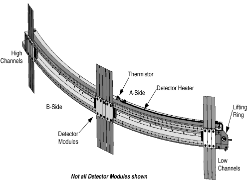
The detector assembly used on this system houses 57 Detector Modules ( Illustration 1). Each module has two sides-an A-side and a B-side (refer to Illustration 2, “LightSpeed 4.X Detector Module,”) - with twelve (12) diodes or cells per channel per side. Cells are labeled D1 through D12, for a total of 24 cells across the detector face (both A and B sides). Note, there are sixteen (16) 0.625 mm cells, eight (8) per side and eight (8) 1.25 mm cells, 4 per side. The 1.25 mm cells comprise the four (4) outer rows on both A and B sides. It must further be noted that only 16 cells per channel are active during any given data collection.
Each module uses two flex connections to the Data Acquisition System (DAS). The flex connectors cannot be removed from the module. The flex end is connected to the DAS via the DAS Detector Interface (DDIF). Both the flex lead and the DAS backplane are outfitted with female pin connectors. There is a male to male pin interface called the “Interposer” that completes the connection. Each flex carries 128 signal lines, 6 FET control lines, 1 analog ground and 1 signal ground.
Detector module temperature is regulated by the electrical resistance heater and the thermistor shown in Illustration 1. This is a 3 zone heater design. The heater and thermistor are incorporated into the detector assembly. The overall mass of the assembled detector system is approximately 25 Kg.
Illustration 2: LightSpeed 4.X Detector Module
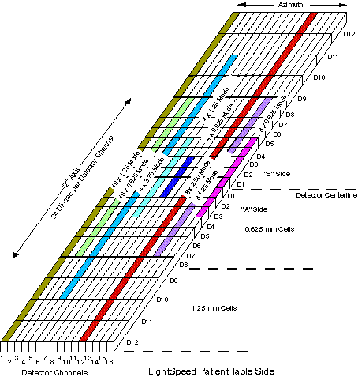
Detector Module: A detector module consists of a 16 x 24 pixel array.
Detector Channel: A detector channel consists of 24 diodes arranged in the “Z” direction. In total, there are 912 detector channels on a detector. A single channel is 1mm in length, in the azimuthal direction. A detector channel is sometimes referred to as a Detector Column.
Detector Row: A row of 16 cells across all detector channels designated by Diode Number AND Side. (Ex. Detector Row D2, Side “A”).
| NOTE: | A Detector Row is not the same as a Scan Slice. A detector row is 1.25mm, 0.625 mm wide or a combination of the two (Z-Direction). |
Cell: A cell is a single photodiode, and is 1/24th of a Detector Channel. In other words, there are 24 cells, or diodes, per Detector Channel.
Side A/B: There are 2 “sides” to a Detector, Side “A” and Side “B”. The sides divide the Detector width in half, with 12 Rows per side. Side “A” is closer to the front of the Gantry (or Table side) and Side “B” is toward the back of the Gantry.
The detector is segmented into cells in the Z dimension. Post-patient collimation is provided by the segmentation of the detector cells, not by a separate post-patient collimator (see Illustration 3). The post-patient collimation, along with summation of cells in the Z direction by the detector FET array, determines the Z-axis slice thickness of the scan data.
Illustration 3: Detector Theory - X-Ray Collimation
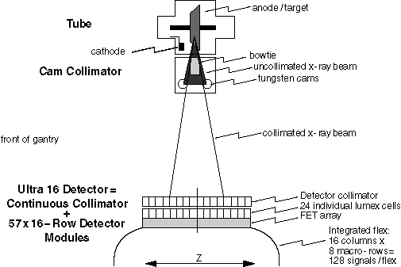
The Z dimension extent of each cell is 0.625 and/or 1.25mm at ISO center as determined by the selected protocol. Cells are summed in Z to produce a macro cell. Macro cells are the combination or ganging of cells in a detector column to produce the desired slice thickness. Four 0.625 mm cells equal a 2.5 mm macro cell, or two 0.625 mm and one 1.25 mm cells equal a 2.5 mm macro cell. The selected protocol determines the combination of cells that are summed together.
All macro cells in the same Z plane form a macro row. A macro row is the detector row or combination of rows that is used to generate a post-collimation slice thickness. A macro row consisting of a single cell in each column produces scan data with a thickness of 0.625 mm at ISO center. The largest macro row allowed produces scan data with a thickness of 5.0mm at ISO center. There can be up to 8 macro rows, labeled 8A, 7A, 6A, 5A, 4A, 3A, 2A, 1A, 1B, 2B, 3B, 4B, 5B, 6B, 7B, and 8B.
Each flex transmits 8 macro cells to the DAS x 16 columns per detector module = 128 data channels per flex.
Illustration 4: Z-axis X-ray Beam Profile, 4 x 2.5mm Detector Configuration
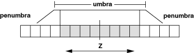
The collimated beam has a Z-axis profile that consists of the umbra (essentially flat) and the penumbra (sloped) (see Illustration 4, highly idealized). In order to avoid image artifacts, the system must always operate with the umbra region completely covering the detector cells contributing to the selected macro rows. During gantry rotation, the position of the beam moves a small amount in the Z direction, due to various mechanical sags in the gantry, tube, collimator, etc. To ensure that the detector cells are completely covered by the umbra region, the Z dimension extent of the umbra is increased so that the detector is covered regardless of Z-axis beam motion (see Illustration 4). This is true for standard protocol profiles.
Low Dose protocol profiles differ in that an additional cell is summed to the outer macro row. The penumbra is allowed to cover the outer two cells of the two or three macro cell as determined by the selected protocol. This methodology reduces overall patient dose while maintaining signal levels for consistent image quality.
Detector reference cells are used to estimate the actual position of the x-ray beam on the detector, and real-time feedback is provided to the collimator to compensate for beam motion.
All tracking schemes require a calibration of the x-ray beam optics. All tracking modes require prediction of the beam position based on the prescription. Static, predictive tracking estimates the beam position once per scan, based on prescription parameters such as gantry tilt, gantry speed, and selected focal spot. Based on these parameters, the beam width and position in Z is estimated such that the detector cells selected are always covered by umbra. Closed-loop tracking provides more accurate control of the beam position in Z. This scheme uses detector reference cells to estimate the actual position of the x-ray beam on the detector and then to compensate for beam motion by providing real-time feedback to the collimator. In this scheme, the collimator corrects for beam motion many times per gantry rotation.
The Detector FETs (Field Effect Transistors) are used as switches to combine detector rows, to achieve the prescribed slice thickness. These FETs are physically located in the detector assembly.
| FETs are EXTREMELY ESD SENSITIVE. ALWAYS use ESD precautions when handling the Detector or Detector flexes. A bad FET will require the entire Detector to be replaced. | |
After a Scan prescription is entered at the Host Computer, the Scan Rx parameters are sent to the appropriate controllers. For slice thickness, the parameters are sent to both the Collimator control board, to select the proper Collimator CAM positions, and the DAS Control Board (DCB), to select the macro row width.
There are three (3) sets of six (6) FET control lines driven by the DCB. These FET control lines form a binary value that gets decoded in the Detector and finally controls Detector Diode selection. The three (3) sets of FET Control are described in Table 1.
Table 1: FET Control Matrix
| FET | DESCRIPTION | CHANNELS |
|---|---|---|
| Low Z | FET control lines for low z-reference channels | DAS Channels 1 - 8 |
| Data | FET control lines for data channels | DAS Channels 9 - 762 |
| High Z | FET control lines for z-reference channels. [Z-Axis tracking.] | High Z-Ref Channels 763 - 768 |
Illustration 5: FET Control Interconnect
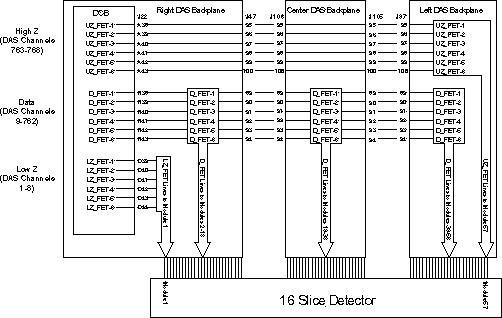
The DCB uses five quad SPST analog switches, which are used to drive the FET_BUS.
Illustration 6: MDAS 16 FET Array Arrangement
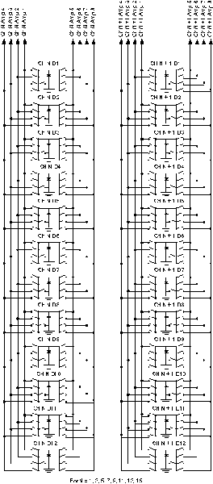
| NOTE: | For a full size version of Illustration 6, click on the pdf icon below. |
Media File 1: Full Size Illustration: MDAS 16 FET Array Arrangement

The FET Control circuitry is the basis for all scanning techniques. Illustration 7 shows the FET modes used for patient and DDC scanning protocols and DASTOOLS XRAY Verification test. Illustration 3 shown DASTOOLS Interconnect test FET configurations.
Illustration 7: Patient and Diagnostic FET Mode Assignments
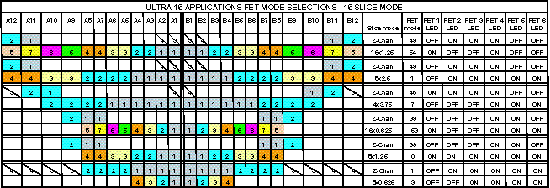
| NOTE: | For a full size version of Illustration 7, click on the pdf icon below. |
Media File 2: Full Size Illustration: Patient and Diagnostic FET Mode Assignments

Illustration 8: FET Mode Assignments for DASTOOLS X-ray Verification and Interconnect Test

| NOTE: | For a full size version of Illustration 8, click on the pdf icon below. |
Media File 3: Full Size Illustration: FET Mode Assignments for DASTOOLS X-ray Verification and Interconnect Test

Illustration 9: MDAS 16 Detector-to-DAS Map, Rows 8A, 7A, 6A & 5A
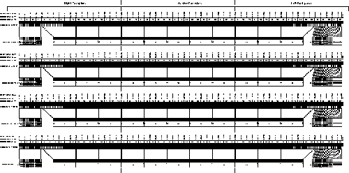
| NOTE: | For a full version of Illustration 9, click on the pdf icon below. |
Media File 4: Full Size Illustration: MDAS 16 Detector-to-DAS Map, Rows 8A, 7A, 6A & 5A

Illustration 10: MDAS 16 Detector-to-DAS Map, Rows 4A, 3A, 2A & 1A
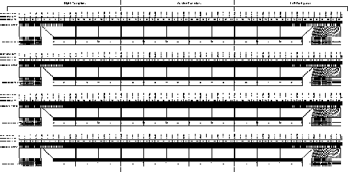
| NOTE: | For a full version of Illustration 10, click on the pdf icon below. |
Media File 5: Full Size Illustration: MDAS 16 Detector-to-DAS Map, Rows 4A, 3A, 2A & 1A

Illustration 11: MDAS 16 Detector-to-DAS Map, Rows 1B, 2B, 3B & 4B
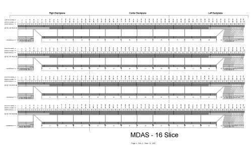
| NOTE: | For a full version of Illustration 11, click on the pdf icon below. |
Media File 6: Full Size Illustration: MDAS 16 Detector-to-DAS Map, Rows 1B, 2B, 3B & 4B

Illustration 12: MDAS 16 Detector-to-DAS Map, Rows 5B, 6B, 7B & 8B

| NOTE: | For a full version of Illustration 12, click on the pdf icon below. |
Media File 7: Full Size Illustration: MDAS 16 Detector-to-DAS Map, Rows 5B, 6B, 7B & 8B

Illustration 13: LightSpeed 4.X Detector to MDAS 16 Architecture Map
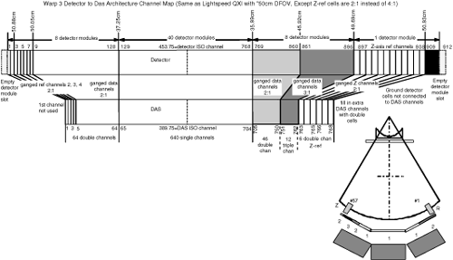
| NOTE: | For a full size version of Illustration 13, click on the pdf icon below. |
Media File 8: Full Size Illustration: LightSpeed 4.X Detector to MDAS 16 Architecture Map

This part is located behind the Right DAS Chassis next to the power supply assemblies. The DMB is used to store non-volatile information such as the Detector Memory Board Revision, which heater/cooler zones are enabled, and on/off temperature set limits to name a few. DMB Memory is divided basically into sections - static memory and dynamic memory. Before a Write to the dynamic portion of On-Detector Memory is performed, a Write to the On-Board Memory is performed first. By writing to the On-Board EEPROM first, this will ensure that the Dynamic portion of On-Detector Memory has a mirror backup located in On-Board Memory. Dynamic data calculated and collected by the DHCB will be written to the DMB Memory in this way once per hour. When reading from the Dynamic portion of DMB Memory, there is no need to copy the data to the DHCB Memory since it was placed there during the Write operation.
The Static portion of DMB Memory is written to the DHCB Memory once per day.
A Background task will execute once a day to compare the contents of both the static and dynamic portions of the DHCB Memory with the DMB Memory to test for DMB Memory corruption.
Illustration 14: Detector Memory Board
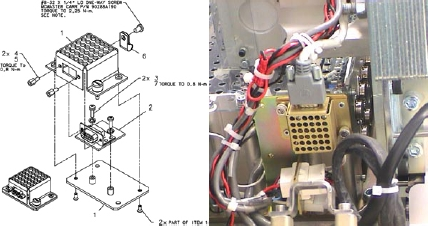
DMB FAILURES
If the DMB module fails the DHCB will sense this and default to the last known value. For the LightSpeed 4.X, this should be 3 zone heater operation. Errors will be posted in the gesys_host.log file indicating the DMB needs to be replaced.
The DMB module can be replaced, if necessary. A new DMB (item 2 in Illustration 14) will have blank Static and Dynamic memory. The DHCB will recognize this upon power up and write all pertinent configuration data to the new DMB module. Histories and detector serial number will be lost.
In order to obtain consistent and accurate results, the detector must be kept at a constant temperature. The detector temperature is maintained by hardware circuits on the Detector Heater Control Board (DHCB). The heater is supplied power by the DHCB, while the DHCB gets power from the external 24V power supply, same as the LightSpeed 3.X. This differs from LightSpeed 1.X and LightSpeed 2.X, where the detector heater control and power were supplied by the DCB.
The DHCB monitors detector temperature via the three thermistors embedded in the external rail of the detector. Hardware circuits on the analog section of the DHCB convert thermistor resistance into a digital value that represents the detector temperature. These digital values are kept in a register on the DHCB, and temperature values are averaged over 10 samples. The output is then compared with upper and lower limits. When the temperature value goes below the lower limit, the DHCB enables the heater power supply via a HTR_ON signal. When the temperature value goes above the upper limit, the DHCB turns the heater power off. In this way, the DHCB can keep the detector at a constant temperature.
Illustration 15: Detector Heater Control
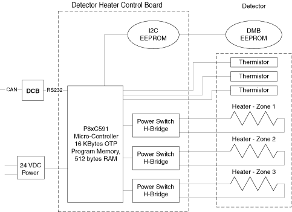
The modules in the detector system are maintained at a temperature of 36 ± 0.3 degrees C (module to module variation) and to 36 ± 0.05 degree C (near thermistor).
The primary function, provided by the 8xC591 microcontroller, is to perform basic control and monitor of temperature in three zones of the detector and report status, faults and errors to the system via the DCB.
The 8xC591 microcontroller is responsible for providing the following functions:
Power-On Self-Test
Board Initialization
Communication
DMB EEPROM Access
DHCB EEPROM Access
Fault Detection and reporting
Firmware Revision reporting
At the time of power-on or board reset, the microcontroller will perform 2 tests.
The microcontroller's RAM will be checked for proper operation by writing and reading back various patterns.
A checksum verification of the application firmware will be performed. If either of these tests fail the converter card application firmware can not be executed. To indicate this failure the LED will flash rapidly at a 5 Hz rate. This LED will continue to flash until communication with the DCB is established.
If either of the 2 tests fails, the FW will disable all heater outputs.
After power-up or rest, the microcontroller's firmware will perform its initialization functions that are partitioned into 5 tasks - hardware initialization, DMB memory validation, communication, parameter, and CPU Watchdog initialization.
The DCB establishes communication with the DHCB via the RS232 communication interface. The Communication link is a Master (DCB) / Slave (DHCB) configuration. Therefore, the DCB initiates all communication and the DHCB simply responds.
Upon initialization, the temperature control tables in both the DMB and DHCB are accessed and their respective checksums are validated. If either table fails its checksum test, the appropriate error bits are masked into the DHCB.
The general philosophy of status and fault handling is that when a change in status or fault occurs, the associated Status/error flag is set. When the DCB queries the DHCB, the status/error bit mask is sent to the DCB and depending on the type of error, the appropriate action is then taken.
Each DHCB condition/fault is represented in a status/error bit map.
STATUS/ERROR FLAGS
The following are Status/Error Flags. The LED will flash per the table below (i.e., if we have a DHCB EEPROM, the LED will flash twice, then pause off, then repeat).
Table 2: DHCB Error Code and LED Display
| STATUS/ERROR CODE | NUMBER OF FLASHES | DESCRIPTION |
|---|---|---|
| 0x0000 | None | No Error |
| 0x0001 | 1 | General Error. |
| 0x0002 | 2 | I2C Error |
| 0x0004 | 3 | EEPROM Readback Verify Error |
| 0x0008 | 4 | On-Detector EEPROM Error |
| 0x0010 | 5 | On-Board EEPROM Error |
| 0x0020 | 6 | Spare-1 Error |
| 0x0040 | 7 | Spare-2 Error |
| 0x0080 | 8 | Spare-3 Error |
| 0x0100 | 9 | Serial Rec Timeout Error |
| 0x0200 | 10 | Sensor and/or Control Abort Fault |
| 0x0400 | 11 | DHCB Mfg. Identification Table in EEPROM is invalid |
| 0x0800 | 12 | Temperature Control Table in EEPROM is invalid |
| 0x1000 | 13 | I2C ADC Failure |
| 0x2000 | 14 | Clock Loss Logic Error |
| 0x4000 | 15 | DHCB is in Service Mode |
| 0x8000 | 16 | Reset Occurred |